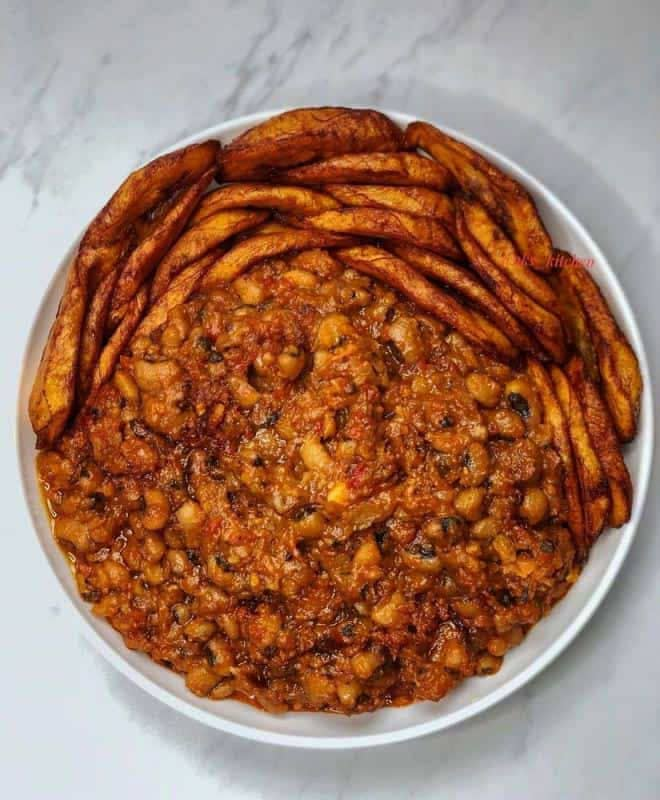

Beans and Fried Plantain is a tasty Nigerian meal made with crispy bean cakes served with golden fried plantain. The food is prepared with beans, peppers and onions and fried until crispy.
It is a delicious combination that can be enjoyed for breakfast, lunch or as a snack. The meal is freshly prepared and served warm for customers.
| Specification | Details |
|---|---|
| Main Food | Beans |
| Side Dish | Fried Plantain |
| Main Ingredients | Beans, Pepper and Onion |
| Preparation | Freshly Fried |
Price: N4,000
Back to Home